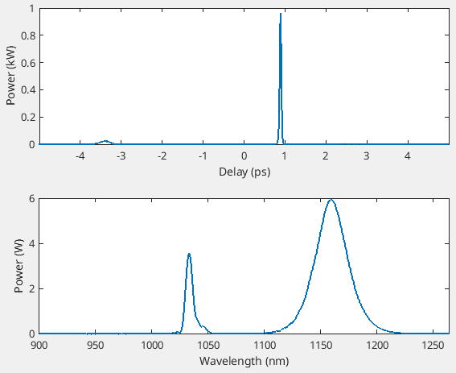

Generalised
Nonlinear Schrödinger Equation solver for nonlinear optical pulse
propagation in optical fibers
This solver is based on the Runge-Kutta 4 in interaction picture
algorithm described in [1] for solving the following nonlinear
Schrödinger equation [2] :
$${{\partial A(z,T)} \over {\partial z}} =
-{{\alpha(\omega)}\over{2}} A(z,T) +\sum_{k \geq
2}{{{i^{k+1}}\over{k!}}\beta_{k}{{\partial^{k}A(z,T)}\over{\partial
T^{k}}}} +...$$
$$...
i\gamma\Bigg(1+\tau_{shock}{{\partial}\over{\partial T}}\Bigg)\times
\Bigg(A(z,T){\int}_{-\infty}^{\infty}{R(T')\vert
A(z,T-T')\vert^{2}dT'}\Bigg)\ \ \ \ \ \ \ \ \ \
\textbf{(1)}$$
Basic usage
Try to run in the Matlab prompt :
This script runs the simplest implementation of the solver. Let’s
study the first section :
c = 299792458;
Tspan = 4e-12;
lambda_low = 900e-9;
lambda_high = 1300e-9;
l0 = 1040e-9;
f0 = c./l0;
[t, dt, f, df, w, lbd, res] = initGNLSE(Tspan, l0, lambda_low);
wshift = fftshift(w);
tol = 1e-7;
This section is creating the usefull axes & values for the
simulation, through the initGNLSE() function. Also, we need
to define some physical values, such as half duration of the time
window, the lowest & the highest wavelength of the simulation, and
the central frequency of the simulation, which is set here to 1.10 −5 .
alpha = 0;
betas = [-3.53571099317077e-26, 3.68095336905838e-41,2.0172694409917e-55...
,-1.31835263681886e-69];
gamma = 0.0742400655658342;
L = 1;
h = L/1000;
fR = 0.18;
The next section is defining the optical fibers via 5 parameters
:
- alpha is setting the confinement losses of the fiber, in m −1.
- betas is a vector containing the Taylor coefficients of the
propagation constant in the fiber, in s n.m −1 , n ≥ 2
- gamma is the nonlinear coefficient of the fiber, in W −1.m −1. It could also be a vector
containing γ(λ)
- L is the fiber length, in m
- h is the initial integration stepsize
- fR is the fractionnal Raman response of the fiber. If set to 0, the
solver will compute the propagation without considering the Raman
response. Typically, fR = 0.18 in
fused silica [2].
In the next section, we are defining the input optical pulse :
N = 2;
tFWHM_p = 100e-15;
t0_p = tFWHM_p/2/sqrt(log(2));
l1 = l0;
f_p = c/l1;
tshift = -3e-12;
P_p = (N^2*abs(betas(1)))./(t0_p^2*gamma);
Epump = sechPulse(P_p,0,t0_p,f_p,tshift,t,f,f0);
The pulse is here defined as a 2nd order soliton, using
the soliton area theorem. l1
is defining the central wavelength of the pulse, which is the same here
as the central wavelength of the simulation. We also need to compute the
corresponding frequency, i.e fp We can add a
temporal shift of the maximum of the pulse. The complex envelop of the
pulse is then defined using sechPulse() as :
$$ A(z=0,t) = \sqrt{P} \text{
sech}\Bigg({{t-t_{shift}}\over{t_0}} \Bigg)
{\exp}\Bigg({i\Big({{C_2}\over{2}}(\omega-\omega_0)^2\Big)-\omega_0 t}
\Bigg)\ \ \ \ \ \ \ \ \ \ \textbf{(2)} $$
We can see here that it’s possible to add another parameter, called
C2 which is
corresponding to the second order taylor coefficient of the spectral
phase of the pulse. This parameter allow the pulse to be chirped.
Since the physical parameters are defined, we can now focus on the
numerical simulation. You can run the simulation by calling the function
propagationFibre()
Eout = propagationFibre(Epump,L,h,l0,l1,tol,t,f,lbd,alpha,betas,gamma,...
fR, 'Propagation example');
singlePlot(Eout, t, lbd, lambda_low, lambda_high, 'linear')
And plot the result with the singlePlot() function :

## Solver description As
mentionned before, this solver is based on the Runge-Kutta 4 algorithm
for solving ODEs. To use this algortihm on eq. (1), we
need to do some maths :
First, let’s rewrite eq. (1) as :
$$ {{\partial A(z,T)} \over {\partial z}}
= \Big(\widehat{L} + \widehat{N}\Big) A(z,T)\ \ \ \ \ \ \ \ \
\ \textbf{(3)}$$
Where L̂ stands for the
linear part of eq. (1), i.e group velocity dispersion
and linear losses operator and N̂ stands for the nonlinear part.
$$\widehat{L} =
-{{\alpha(\omega)}\over{2}} +\sum_{k \geq
2}{{{i^{k+1}}\over{k!}}\beta_{k}{{\partial^{k}}\over{\partial T^{k}}}}\
\ \ \ \ \ \ \ \ \ \textbf{(4)}$$
$$\widehat{N} =
i\gamma\Bigg(1+\tau_{shock}{{\partial}\over{\partial
T}}\Bigg)\times\Bigg({\int}_{-\infty}^{\infty}{R(T')\vert
A(z,T-T')\vert^{2}dT'}\Bigg)\ \ \ \ \ \ \ \ \ \
\textbf{(5)}$$
Now let’s define :
AI(z,T) = exp ((z−z′)L̂)A(z,T) (6)
Applied to eq. (2) :
$$ {{\partial A_{I}(z,T)}\over{\partial
z}} = \widehat{N_{I}} A_{I}(z,T) \ \ \ \ \ \ \ \ \ \
\textbf{(7)}$$
N̂I = exp (−(z−z′)L̂)N̂exp ((z−z′)L̂) (8)
So, by setting $z' = z+{h\over 2}$,
it’s easy to integrate eq. (7) using standard
integration algorithms.
Integration
of the rate equations for Yb-doped fibers
A version of the solver is implemented along with the rate equations
for Yb-doped fibers. It is based on the algorithm proposed by Stoliarov
et al. [6]. The solver computes the gain over the spectral
window at each integration step. The gain is evaluated from :
g(z,ω) = [σa(ω)+σe(ω)]n2(z) − σaNYb (9)
$$ n_2(z) =
N_{Yb}{{{{\sigma_{p}^{a}\Gamma_{p}}\over{\hbar \omega}} P_{p}(z) +
f_{rep} \int{{{\sigma^{a}(\omega)\rho(\omega)}\over{\hbar
\omega}}d\omega}}\over{{{(\sigma_{p}{{a}+\sigma_{p}^{e})\Gamma_{p}}\over{\hbar
\omega}} P_{p}(z) + f_{rep}
\int{{{(\sigma^{a}(\omega)+\sigma^{e}(\omega))\rho(\omega)}\over{\hbar
\omega}}d\omega}+{{A_{eff}}\over{\tau}}}}}\ \ \ \ \ \ \ \ \ \
\textbf{(10)} $$
$$ {{dP_{p}(z)}\over{dz}} =
[(\sigma_{p}^{a} + \sigma_{p}^{e})n_{2}(z) -
\sigma_{p}^{a}N_{Yb})]\Gamma_{p} P_{p}(z) - \alpha(\omega_{p})P_{p}(z)\
\ \ \ \ \ \ \ \ \ \textbf{(11)} $$
The solver for the gain integrated algorithm can be called with the
propagationFibreGain() function, and an example of its
implementation can be found in the GMN_Stoliarov script ##
List of functions
- adaptiveSolver.m
Usage :
[Eout, temp_rad, spec_rad] = adaptiveSolver(E, L, h, alpha, betas, gamma, fR,...
hR_w, tau_shock, t, lbd, wshift, tol, FiberName)
Description :
This function computes the complex envelop of an optical pulse after
its propagation in a given optical fiber by solving eq.
(1). This solver is based on a RK4IP algorithm, and is
using an intelligent adaptative stepsize from [3].
Inputs :
- E : Complex envelop of the input optical pulse
- L : Length of the fiber [m]
- h : Initial stepsize [m]
- alpha : Confinement losses of the fiber [m −1]
- betas : Taylor coefficients of the propagation constant [s n.m −1, n ≥ 2]
- gamma : Nonlinear coefficient of the fiber [W −1.m −1]
- fR : Fractionnal Raman response. Raman scattering is neglected if
set to 0
- hR_w : Raman scattering response of the propagation medium
- tau_shock : Shock time for self-steepening [s]
- lbd : Wavelength vector of the simulation [m]
- wshift : Fourier shift of the simulation angular frequency vector
[rad.s −1]
- tol : Maximum tolerance for the adaptative stepsize
- FiberName : Name of the fiber
Outputs :
- Eout : Complex envelop of the pulse after the fiber
- temp_rad : Duration evolution of the pulse during the propagation
[s]
- spec_rad : Spectral width evolution of the pulse during the
propagation [m]
- adaptiveSolverGain.m
Usage :
[Eout, temp_rad, spec_rad, Pump_out] = adaptativeSolverGain(E, L, h, alpha, betas, gamma, fR,...
hR_w, tau_shock, t, lbd, wshift, tol, frep, Pp, lbd_p,...
sigma_a, sigma_e, sigma_ap, sigma_ep, N_ions, r_core,...
Gamma_P, ww0, FiberName)
Description : This function computes the complex envelop of an
optical pulse after its propagation in a given Yb-doped fiber.
Inputs :
- E : Complex envelop of the input optical pulse
- L : Length of the fiber [m]
- h : Initial stepsize [m]
- alpha : Confinement losses of the fiber [m −1]
- betas : Taylor coefficients of the propagation constant [s n.m −1, n ≥ 2]
- gamma : Nonlinear coefficient of the fiber [W −1.m −1]
- fR : Fractionnal Raman response. Raman scattering is neglected if
set to 0
- hR_w : Raman scattering response of the propagation medium
- tau_shock : Shock time for self-steepening [s]
- lbd : Wavelength vector of the simulation [m]
- wshift : Fourier shift of the simulation angular frequency vector
[rad.s −1]
- tol : Maximum tolerance for the adaptative stepsize
- frep : Repetition rate of the input laser [Hz]
- Pp : Input pump power [W]
- lbd_p : Pump wavelength [m]
- sigma_a : absorption cross sections over the spectral window of the
simulation [m 2]
- sigma_e : emission cross sections over the spectral window of the
simulation [m 2]
- sigma_ap : absorption cross section at the pump wavelength [m 2]
- sigma_ep : emission cross section at the pump wavelength [m 2]
- N_ions : Number of Yb ions in the glass matrix [m −3]
- r_core : radius of the fiber core
- Gamma_P : overlap of the pump mode and the core of the fiber
- ww0 : vector of angular frequency [rad.s −1]
- FiberName : Name of the fiber
Outputs :
- Eout : Complex envelop of the pulse after the fiber
- temp_rad : Duration evolution of the pulse during the propagation
[s]
- spec_rad : Spectral width evolution of the pulse during the
propagation [m]
- Pump_out : Residual pump power at the output of the fiber
- autocoTrace.m
Usage :
Description :
This function computes the autocorrelation function of an optical
pulse.
Inputs :
- E : Complex envelop of the input optical pulse OR Intensity envelop
of the input optical pulse
Outputs :
- AC : Normalized intensity profile of the autocorrelation trace.
- centerPulse.m
Usage :
Ecenter = centerPulse(E,t)
Description :
This function center the input pulse in the temporal domain
Inputs :
- E : Complex envelop of the input pulse
- t : time vector [s]
Output :
- Ecenter : complex envelop of the centered pulse
- compressPulse.m
Usage :
[Ecomp, Ltot, Dtot] = compressPulse(E, t, f, l0, lc, betas_init, Linit)
Description :
This function calculates the best compressor parameters to minimize
the autocorrelation trace width of the input optical field. Initial
propagation stepsize & dispersion coefficients must be well guessed
in order to reduce the compuation time and to improve the accuracy.
Inputs :
- E : Complex envelop of the optical pulse to compress
- t : Time vector of the simulation [s]
- f : Frequency vector of the simulation [Hz]
- l0 : Central wavelength of the simulation [m]
- lc : Central wavelength of the pulse to compress [m]
- betas_init : Dispersion coefficients [s n.m −1, n ≥ 2]
- Linit : Initial stepsize for the linear propagation [m]
Outputs :
- Ecomp : Complex envelop of the compressed pulse
- Ltot : Total length through the dispersive elements
- Dtot : Total dispersion coefficients for the compressor [s n, n ≥ 2]
- dummyCrossYb.m
Usage :
[sig_a, sig_e] = dummyCrossYb(lbd)
Description :
This function computes the absorption and emission cross sections of
a dummy yb-doped fiber over the given spectral window.
Input :
- lbd : wavelength vector [m]
Outputs :
- sig_a : absorption cross section [m 2]
- sig_e : emission cross section [m 2]
- gaussianPulse.m
Usage :
E = gaussianPulse(P,C2,t0,f1,t_shift,t,f, f0)
Description :
This function creates the complex envelop vector of a gaussian
optical pulse. An amplitude noise of one photon per spectral node is
added, based on the following :
Anoise(t) = ℱ−1[(Tmaxℏω)1/2exp (−iψ(ωn))](t) (12)
where ψ(ωn)
follows a normal distribution.
Inputs :
- P : Peak power of the Fouier transform limited pulse [W]
- C2 : Second order coefficient of the Taylor developpment of the
spectral phase [s 2]
- t0 : 1/e half pulse duration [s]
- f1 : Optical center frequency [Hz]
- t_shift : Temporal shift of the pulse [s]
- t : Simulation time vector [s]
- f : Simulation frequency vector [Hz]
- f0 : Simulation central frequency [Hz]
Outputs :
- E : Complex envelop of the optical pulse
- gaussRadius.m
Usage :
radius = gaussRadius(x, y, type)
Description :
This function evaluate the radius of a gaussian function.
Inputs :
- x : x-axis datas
- y : y-axis datas
- type : string defining the radius (
'1/e',
'1/e2', 'FWHM')
Outpus :
- radius : Evaluated radius [x-units]
- GratingCompressor.m
Usage :
[betas] = GratingCompressor(N, theta_i, lbd)
Description :
This function computes the 2nd, 3rd and 4th orders of dispersion of a
Treacy compressor
Inputs :
- N : grating density [lines.mm −1]
- theta_i : incidence angle of the beam. Must be contained between the
Littrow angle and 90° [°]
- lbd : Central wavelength of the input pulse [m]
Output : * betas : vector containing the dispersion parameters [s
n.m −1, 2 ≤ n ≤ 4]
- initGNLSE.m
Usage :
[t, dt, f, df, w, lbd, res, lambda_low, lambda_high] = initGNLSE(Tspan, l0, lambda_low, lambda_high)
Description :
Initialize the global values & vectors for the simulation.
Inputs :
- Tspan : Half width of the temporal window [s]
- l0 : Central wavelength of the simulation [m]
- lambda_low : Lowest wavelength of the simulation [m]
Outputs :
- t : Created time vector [s]
- dt : Time resolution [s]
- f : Created frequency vector [Hz]
- df : Frequency resolution [Hz]
- w : Created angular frequency vector [rad.s −1]
- lbd : Created wavelength vector [m]
- res : Size of the vectors
- linearProp.m
Usage :
TE = linearProp(E, f, l0, lc, betas, L)
Description :
Performs the linear propagation of an optical pulse through a
dispersive fiber
Inputs :
- E : Complex envelop of the input optical pulse
- f : Frequency vector of the simulation [Hz]
- l0 : Central wavelength of the simulation [m]
- lc : Central wavelength of the optical pulse [m]
- betas : Dispersion coefficients [s n.m −1, n ≥ 2]
- L : Length of the fiber [m]
Outputs :
- TE : Complex envelop of the output optical pulse
- n2yb.m
Usage :
n_up = n2yb(ww0, rho_w, sigma_a, sigma_e, lbd_p, Pp, Gamma_P, frep, rcore, N_ions)
Description : This function computes the population of ions in the
excited state for a given pump power and signal input.
Inputs :
- ww0 : vector of angular frequency [rad.s −1]
- rho_w : spectral power density of the signal over the spectral
window
- sigma_a : absorption cross sections over the spectral window of the
simulation [m 2]
- sigma_e : emission cross sections over the spectral window of the
simulation [m 2]
- lbd_p : Pump wavelength [m]
- Pp : Input pump power [W]
- Gamma_P : overlap of the pump mode and the core of the fiber
- frep : Repetition rate of the input laser [Hz]
- r_core : radius of the fiber core
- N_ions : Number of Yb ions in the glass matrix [m −3]
Output :
- n_up : ion population on the excited state
- nonlinearStep.m
Usage :
k = nonlinearStep(E, h, gamma, tau_shock, wshift)
Description :
Nonlinear quarter-step for the RK4IP algorithm without Raman
scattering (i.e fR = 0).
Inputs :
- E : Complex envelop of the input optical pulse
- h : propagation stepsize [m]
- gamma : Nonlinear coefficient of the fiber [W −1.m −1]
- tau_shock : Shock time for self-steepening [s]
- wshift : Fourier shift of the simulation angular frequency vector
[rad.s −1]
Outpus :
- k : Nonlinear quarter-step operator
- nonlinearStepFull.m
Usage :
k = nonlinearStepFull(E, h, fR, hR_w, gamma, tau_shock, wshift)
Description :
Nonlinear quarter-step for RK4IP algorithm including Raman
scattering.
Inputs :
- E : Complex envelop of the input optical pulse
- h : propagation stepsize [m]
- fR : Fractionnal Raman response of the propagation medium (typ. 0.18
in fused silica) []
- hR_w : Raman scattering response of the fiber in frequency
domain
- gamma : Nonlinear coefficient of the fiber [W −1.m −1]
- tau_shock : Shock time for self-steepening [s]
- wshift : Fourier shift of the simulation angular frequency vector
[rad.s −1]
Outpus :
- k : Nonlinear quarter-step operator
- propagationFibre.m
Usage :
[Eout, temp_rad, spec_rad] = propagationFibre(E, L, h, l0, lc, tol ,t, f, lbd, alpha, betas, gamma, fR, FiberName)
Description :
This function computes the propagation over a specific distance of an
optical fiber.
INPUTS :
- E : Complex envelop of the input electrical field
- L : Length of the optical fiber [m]
- h : Propagation initial stepsize [m]
- l0 : Central vacuum wavelength of the simulation [m]
- lc : Central vacuum wavelength of the input optical field [m]
- tol : Relative tolerance of the simulation []
- t : Simulation time vector [s]
- f : Simulation frequency vector [Hz]
- lbd : Simulation wavelength vector [m]
- alpha : Confinement losses of the fiber [m −1]
- betas : Taylor coefficients of the propagation constant at the given
central wavelength [s n.m −1, n ≥ 2]
- gamma : Nonlinear coefficient of the fiber [W −1.m −1]
- fR : Fractionnal Raman response of the propagation medium (0.18 in
fused silica). Set to zero to exclude Raman scattering []
- FiberName : String to display while computing
OUTPUTS :
- Eout : Complex envelop of the output optical field
- temp_rad : pulse duration evolution during the propagation [s]
- spec_rad : Pulse spectral width evolution during the propagation
[m]
- propagationFibreGain.m
Usage :
[Eout, temp_rad, spec_rad, Pump_out] = propagationFibreGain(E, L, h, l0, lc, tol ,t, f, lbd, alpha, betas, gamma, fR,frep, Pp, lbd_p, sigma_a,...
sigma_e, sigma_ap, sigma_ep, N_ions, r_core,Gamma_P, FiberName)
Description :
This function computes the propagation over a specific distance of a
yb-doped fiber
Inputs :
- E : Complex envelop of the input electrical field
- L : Length of the optical fiber [m]
- h : Propagation initial stepsize [m]
- l0 : Central vacuum wavelength of the simulation [m]
- lc : Central vacuum wavelength of the input optical field [m]
- tol : Relative tolerance of the simulation []
- t : Simulation time vector [s]
- f : Simulation frequency vector [Hz]
- lbd : Simulation wavelength vector [m]
- alpha : Confinement losses of the fiber [m −1]
- betas : Taylor coefficients of the propagation constant at the given
central wavelength [s n.m −1, n ≥ 2]
- gamma : Nonlinear coefficient of the fiber [W −1.m −1]
- fR : Fractionnal Raman response of the propagation medium (0.18 in
fused silica). Set to zero to exclude Raman scattering []
- frep : Repetition rate of the input laser [Hz]
- Pp : Input pump power [W]
- lbd_p : Pump wavelength [m]
- sigma_a : absorption cross sections over the spectral window of the
simulation [m 2]
- sigma_e : emission cross sections over the spectral window of the
simulation [m 2]
- sigma_ap : absorption cross section at the pump wavelength [m 2]
- sigma_ep : emission cross section at the pump wavelength [m 2]
- N_ions : Number of Yb ions in the glass matrix [m −3]
- r_core : radius of the fiber core
- Gamma_P : overlap of the pump mode and the core of the fiber
- FiberName : String to display while computing
Outputs :
- Eout : Complex envelop of the pulse after the fiber
- temp_rad : Duration evolution of the pulse during the propagation
[s]
- spec_rad : Spectral width evolution of the pulse during the
propagation [m]
- Pump_out : Residual pump power at the output of the fiber
- propagationMap.m
Usage :
propagationMap(E, t, lbd, lambda_low, lambda_high, L)
Description :
Display the slices of a saved propagation matrix in both temporal
& spectral domains.
Inputs :
- E : Matrix of complex envelops
- t : time vector of the simulation [s]
- lbd : Wavelength vector of the simulation [m]
- lambda_low : Lowest wavelength to display [m]
- lambda_high : Highest wavelength to display [m]
- L : Propagation length
Outputs :
- ramanResponseBW.m
Usage :
hR_w = ramanResponseBW(fR, wshift)
Description :
This function computes the Raman response of silica acording to
[4]
Inputs :
- fR : Fractionnal Raman response (typ. 0.18 in fused silica)
- wshift : Fourier shift of the simulation angular frequency vector
[rad.s −1]
Outputs :
- hR_w : Raman scattering response in the frequency domain
- reconstructPulse.m
Usage :
[t, dt, f, df, w, lbd, res, Pulse] = reconstructPulse(filename, tspan, llow, lhigh, l0, Ep)
Description :
This function creates the complex envelop of an optical pulse from a
given optical spectrum, assuming zero phase
Inputs :
- filename : path to the file containing the spectral information.
Must be a two column file with [wavelength (nm) spectrum (a.u)]
- tspan : Half time window duration [s]
- llow : lowest wavelength of the desired spectral window [m]
- lhigh : highest wavelength of the desired spectral window [m]
- l0 : central wavelength of the provided spectrum [m]
- Ep : Energy of the reconstructed pulse [J]
Outputs :
- t : created time vector [s]
- dt : temporal resolution [s]
- f : frequency vector [Hz]
- df : spectral resolution [Hz]
- w : angular frequency vector [rad.s −1]
- lbd : wavelength vector of the reconstructed pulse [nm]
- Pulse : Complex envelop of the reconstructed pulse
- rectPulse.m
Usage :
E = rectPulse(P, tFWHM, f1, t, f, f0)
Description :
This function computes the complex envelop of a rectangular optical
pulse, with an amplitude noise according to eq.
(12).
Inputs :
- P : Peak power of the pulse [W]
- tFWHM : Full width at half maximum duration of the pulse [s]
- f1 : Central frequency of the pulse [Hz]
- t : Simulation time vector [s]
- f : Simulation frequency vector [Hz]
- f0 : Simulation central frequency [Hz]
Outputs :
- E : Complex envelop of the rectangular pulse
- RK4IP.m
Usage :
TE = RK4IP(E, h, alpha, betas, gamma, fR, hR_w, tau_shock, lbd, wshift)
Description :
Runge-Kutta 4 in interaction picture algorithm for the intelligent
adaptative stepsize solver for the generalised nonlinear Schrödinger
equation (1). This function is the main algorithm of
this solver.
Inputs :
- E : Complex envelop of the input electrical field
- h : Propagation initial stepsize [m]
- alpha : Confinement losses of the fiber [m −1]
- betas : Taylor coefficients of the propagation constant at the given
central wavelength [s n.m −1, n ≥ 2]
- gamma : Nonlinear coefficient of the fiber [W −1.m −1]
- fR : Fractionnal Raman response of the propagation medium (0.18 in
fused silica). Set to zero to exclude Raman scattering []
- hR_w : Raman scattering response in the frequency domain
- tau_shock : Shock time for self-steepening [s]
- lbd : Simulation wavelength vector [m]
- wshift : Fourier shift of the simulation angular frequency vector
[rad.s −1]
Outputs :
- TE : Complex envelop of the output pulse
- RK4IPGain.m
Usage :
TE = RK4IPGain(E, h, alpha, betas, gamma, fR, hR_w, tau_shock, lbd, wshift, g)
Description :
This function is the adapted RK4IP algorithm for yb-doped fibers.
Inputs : * E : Complex envelop of the input electrical field * h :
Propagation initial stepsize [m] * alpha : Confinement losses of the
fiber [m −1] * betas :
Taylor coefficients of the propagation constant at the given central
wavelength [s n.m
−1, n ≥ 2] * gamma : Nonlinear coefficient of the
fiber [W −1.m −1] * fR : Fractionnal Raman
response of the propagation medium (0.18 in fused silica). Set to zero
to exclude Raman scattering [] * hR_w : Raman scattering response in the
frequency domain * tau_shock : Shock time for self-steepening [s] * lbd
: Simulation wavelength vector [m] * wshift : Fourier shift of the
simulation angular frequency vector [rad.s −1] * g : small signal gain [m
−1]
Output :
- TE : Complex envelop of the output pulse
- sechPulse.m
Usage :
E = sechPulse(P, C2, t0, f1, t_shift, t, f, f0)
Description :
This function computes the complex envelop of an hyperbolic secant
optical pulse with amplitude noise according to eq.
(12).
Inputs :
- P : Peak power of the Fouier transform limited pulse [W]
- C2 : Second order coefficient of the Taylor developpment of the
spectral phase [s 2]
- t0 : 1/e half pulse duration [s]
- f1 : Optical center frequency [Hz]
- t_shift : Temporal shift of the pulse [s]
- t : Simulation time vector [s]
- f : Simulation frequency vector [Hz]
- f0 : Simulation central frequency [Hz]
Outputs :
- E : Complex envelop of the optical pulse
- silicaLosses.m
Usage :
alpha = silicaLosses(lbd)
Description :
This function computes the silica optical losses vs wavelength,
according to [5].
Inputs :
- lbd : Wavelength vector [m]
Outputs :
- alpha : Silica losses [m −1]
- singlePlot.m
Usage :
singlePlot(E, t, lbd, lambda_low, lambda_high, spectralScale)
Description :
This function display the input optical field in both time &
spectral domain.
Inputs :
- E : Complex electric field vector
- t : Simulation time vector [s]
- lbd : Simulation wavelength vector [m]
- lambda_low : Lowest wavelength to display [m]
- lambda_high : Highest wavelength to display [m]
- spectralScale :
'linear' for linear scaling &
'log' for dB scaling in the spectral domain [string]
Outputs :
- spectralFilter.m
Usage :
Eout = spectralFilter(E, l_c, lFWHM, t, lbd, filterType)
Description :
This function can filter the complex envelop of an optical pulse.
Inputs :
- E : complex envelop of the input pulse
- l_c : center wavelength of the filter [m]
- lFWHM : spectral width of the filter [m]
- t : temporal vector [s]
- lbd : wavelength vector [m]
- filterType : Type of the filter. Options are :
- gaussian (default)
- square
- LPF (low pass filter, set lFWHM to 0)
- HPF (high pass filter, set lFWHM to 0)
Output
- Eout : complex envelop of the filtered pulse
- spectrogram.m
Usage :
Sp = spectrogram(P, G, dt, N)
Description : This function computes the spectrogram of the input
pulse
Inputs :
- P : complex envelop of the input pulse
- G : vector describing the optical gate
- dt : time resolution [s]
- N : size of the created spectrogram
Output :
- Sp : two dimensionnal array containing the spectrogram
Python usage
Most of the described functions are also available for python usage.
The implementation is mostly the same, just follow the
example.py and GMN_Stoliarov.py scripts. Some
functions may miss, please ask me if you need anything. The dependancies
are listed in the requirements.txt file, which you can call
with :
python -m pip install -r requirements.txt
Known issues
In the Matlab implementation, you may have an error from the
textprogressbar function if you force the script to stop. Just run the
script another time to clear the error.
References
- [1] : Stéphane Balac, Arnaud Fernandez, Fabrice Mahé, Florian Méhats
& Rozenn Texier-Picard. The Interaction Picture method for
solving the generalized nonlinear Schrödinger equation in optics,
ESAIM : Mathematical Modelling and Numerical Analysis, 50(4) :945-964,
July 2016.
- [2] : Agrawal. Nonlinear Fiber Optics, Elsevier,
5th edition, 2013.
- [3] : Nguyen, D. T. Modeling and Design Photonics by Examples
using Matlab, IOP publishing, 2021. doi :
10.1088/978-0-7503-2272-0
- [4] : Blow, K. J., & Wood, D. (1989). Theoretical
description of transient stimulated Raman scattering in optical
fibers. IEEE Journal of Quantum Electronics, 25(12),
2665–2673.
- [5] : Sørensen, S. T. Deep-blue supercontinuum light sources
based on tapered photonic crystal fibers, PhD thesis, DTU Fotonik
,2013.
- [6] : Stoliarov, D., Manuylovich, E., Koviarov, A., Galiakhmetova,
D. and Rafailov, E. Gain-managed nonlinear amplification of
ultra-long mode-locked fiber laser, Opt. Exp. 31(26), 2023